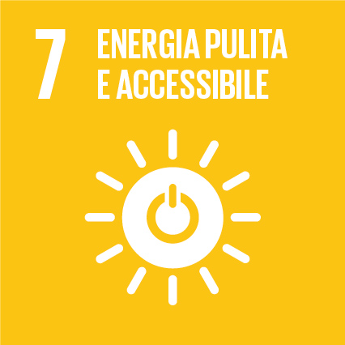

CdSFISICA
Codice187DD
CFU6
PeriodoSecondo semestre
LinguaItaliano



Acquisire conoscenze di base sulle principali metodologie e tecniche geofisiche che consentono l'esplorazione della Terra a varie scale. In particolare si comprendera' come alcune leggi fondamentali della fisica, come ad esempio quelle dell'elastodinamica, possano trovare applicazione dal campo sismologico (fenomeni a frequenza inferiore ad 1 Hz), all'esplorazione del sottosuolo e alle indagini a fini ambientali (fenomeni dell'ordine delle decine e centinaia di Hz), fino alle analisi ultrasoniche di campioni di roccia in laboratorio.
The acquisition of a basic knowledge on the main geophysical methodologies and techniques that enable the exploration of the Earth at various scales. In particular, it will be shown how some fundamental laws of physics, such as those of elastodynamics, may find applications from earthquake seismology (phenomena at very low frequency, less than 1 Hz) to the exploration of the sub-surface and to environmental studies (phenomena of the order of tens and hundreds of Hz), to the ultrasonic analysis of rock samples in the lab.
Esame orale in cui lo studente potrà dimostrare le conoscenze acquisite.
Written exam (followed by a brief interview) in which the student will be able to demonstrate his/her knowledge on the topics of the course.
Lettura e comprensione di semplici sismogrammi a varie scale di frequenza.
Reading and understanding of the features of simple seismograms at various frequency scales.
Nella prova saranno inserite domande specifiche di carattere pratico.
Specific questions, with a practical slant, will be included in the written test.
Lo studente svilupperà una incrementata sensibilità verso le tematiche geofisiche e le possibilità di studio e di ricerca in questo campo.
The student will develop an increased sensitivity towards the geophysical themes and the possibilities of study and research in this field.
Gli studenti saranno esposti a vari problemi, sia durante le lezioni sia durante la prova di esame.
Students will be challenged to solve several problems, both during the lectures and at the examination.
Basi di Analisi Matematica e di Fisica.
Basics of math and phys.
Lezioni frontali, con ausilio di slides e lavagna.
Frequenza: consigliata
Attività didattiche:
- frequenza delle lezioni
- partecipazione ad eventuali seminari
- studio individuale
Il corso è offerto in lingua italiana sebbene le slides sono in lingua inglese.
Delivery: face to face, with the use of slides and blackboard.
Attendance: Advised
Learning activities:
- attending lectures
- participation in seminars
- individual study
The course is offered in Italian although the slides are in English.
Geologia: l'oggetto delle indagini geofisiche
La Terra a varie scale: il Globo Terrestre (migliaia di chilometri), i bacini sedimentari e le catene montuose, gli affioramenti, i campioni di roccia (pochi centimetri). Una breve descrizione dei metodi di indagine geofisica.
Meccanica del continuo.
Relazione sforzi-deformazioni in campo lineare. Anisotropia elastica. Derivazione della Legge di Hooke generalizzata. Solido generalmente anisotropico (simmetria monoclina 21 costanti elastiche). La matrice di delle costanti elastiche per simmetria monoclina (21 compliances), ortorombica (9), isotropica trasversale (5), isotropica (2) e per un mezzo fluido (1).
Onde e raggi
Derivazione dell'equazione d'onda in campo lontano per onde acustiche. Cenni sulla funzione di Green. L'equazione d'onda scalare e vettoriale in mezzi solidi isotropi, derivazione delle velocità di propagazione e delle caratteristiche di polarizzazione per onde compressionali e distorsionali. Dalla teoria delle onde alla teoria dei raggi: equazione iconale. Ottica geometrica, leggi di Fermat e Snell.
Conversioni di modo e derivazione delle equazioni di Zoeppritz per il calcolo dei coefficienti di riflessione e trasmissione su un'interfaccia piana separante due semispazi solidi.
Sismologia dei terremoti (fino a pochi Hz)
Problema in avanti: tracciamento di raggi in una Terra sferica, equazioni parametriche per il tempo di viaggio e per il calcolo della distanza epicentrale.
Le nostre osservazioni: sismogrammi da terremoti.
Sismologia di esplorazione (fino a poche centinaia di Hz)
Problema in anvanti: tracciamento di raggi in mezzi semplificati: interfacce planari stratificate, equazioni parametriche per il tempo di viaggio e calcolo della distanza tra sorgente e ricevitore. Le nostre osservazioni: sismogrammi generati da sorgenti sismiche artificiali. Esempi a varie scale (dagli Hz ai MHz).
Cenni sul problema inverso: dalle osservazioni al modello.
Problema inverso: come gli antichi sismologi stimavano le velocità delle onda nella Terra (equazioni di Wiechert Herglotz). Tomografia a trasmissione. Problemi inversi Problemi di non-univocità, mal condizionamento e ambiguità del problema inverso.
Esempi Simogrammi di terremoti, esplorazione sismica, misure soniche in pozzo, misure ultrasoniche in laboratorio.
Geology: the objects of geophysical investigations
The Earth at various scales: the Earth Globe (thousands of kilometres), sedimentary basins and mountain chains, outcrops, rock samples (few centimeters). A very brief outline of geophysical investigation methods.
The complexity of rocks: elastic anisotropy. Generally anisotropic solid (monoclinic symmetry 21 elastic constants). The stiffness matrix for monoclinic (21 compliances), orthorhombic (9), transverse isotropic (5), isotropic media (2), and fluid (1).
Waves and Rays
Stress- Strain relations for a fluid medium. Combining the stress-strain relation with the 2nd Law of Dynamic: the acoustic wave equation
From Wave theory to Ray theory: asymptotic solution of the scalar wave equation (eikonal equation). Fermat and Snell laws.
A simplified (scalar) wave equation for P waves and S waves in isotropic solid media versus the full vectorial wave equation.
Earthquake seismology (up to few Hz)
Forward problem: tracing rays in a spherical Earth, parametric equations for the travel-time and the epicentral distance computation.
Our observations: Earthquake seismograms.
Inverse problem: how the ancient seismologists estimated the wave velocities in the Earth (Wiechert Herglotz equations).
Exploration seismology (up to few hundreds Hz)
Forward problem tracing rays in simplified media: stratified planar interfaces, parametric equations for the travel-time and the source to receiver distance computation. Dix equation.
Our observations: source generated seismograms.
Inverse problem: how the old seismologists estimated the velocities of a planar Earth.
Full-waveform sonic logs (up to few kHz)
Examples of seismograms. Correlation with geological features.
Ultrasonic measurements on rock samples (up to few MHz)
The interaction between the pore fluid and the solid matrix of the rock. Biot theory. Gassman low frequency approximation.
Examples Earthquake, exploration seismic, fullwaveform sonic and ultrasonic seismograms: different scales same waves. Inverse problems.
Copie delle slides, delle note e di pertinenti articoli scientifici saranno disponibili agli studenti.
Copies of the slides, of lectures and of relevant publications will be available to the students
Il contenuto del corso è integralmente riportato nel materiale fornito dal docente. Tramite queste e gli ulteriori riferimenti bibliografici, il non frequentante può cercare di sviluppare la necessaria preparazione.
The course content is fully reported in the material provided by the teacher. Through this documentation and the additional bibliographic references, the non-attending person can try to develop the necessary preparation.
L'esame consiste in un colloquio con una serie di quesiti, piccole dimostrazioni o discussioni da elaborare liberamente.
The exam consists in answering a number of questions. For some of them the student has to chose among multiple answers. The remaining others refer to small demonstrations or discussions. Each question has its proper score. The total sum is 30.